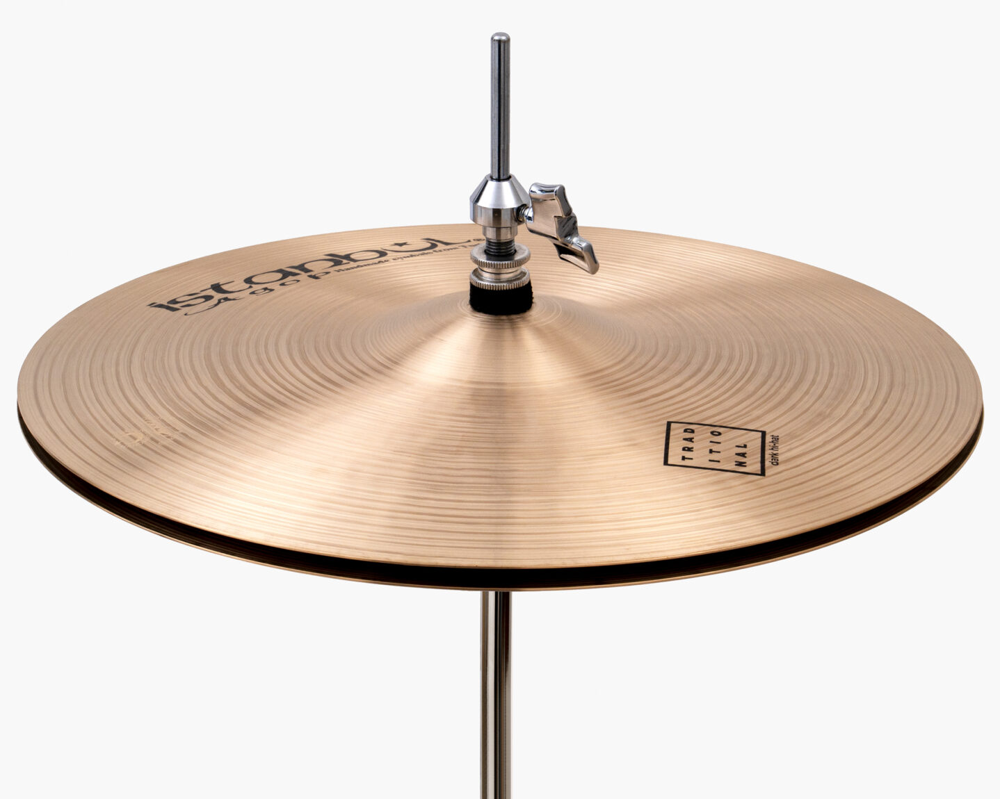
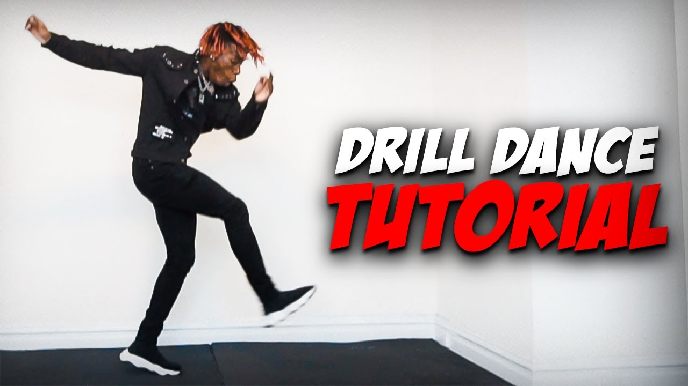
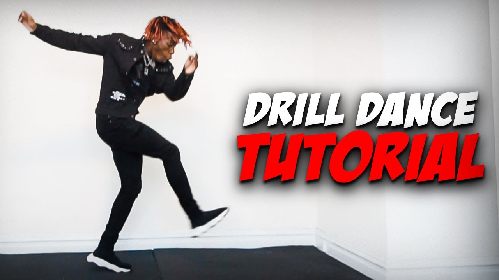
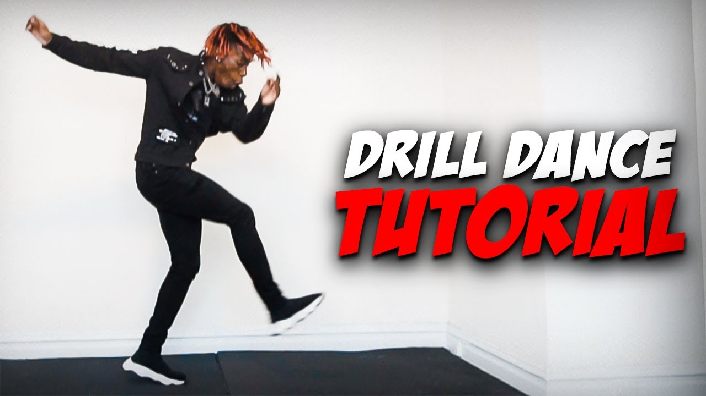

Styles

 

Once of the most defining characteristics of a drill chart is the hi hat pattern. Pictured here is a hi-hat on a drum set,
though these days most hi-hat sounds are generated electronically. The hi-hat has a "tut" sound, short and marked, and typically has a rhythm of
tut | | tut | | tut |.
In contrast with the higher-pitched sound of the hi-hat, drill often features a menacing 808, a mix between a kick drum and bass. This low, meaty sound
can give drill songs a dark undertone. Often the 808 slide, or a descending set of notes, will be included as a transition into different bars, as it is quite prominent.

Drill is not complete without its dance. In pretty much all drill music videos, you will see a group of guys dancing to the music in drill style. As you can see in the picture,
a lot of foot movement and bending of the knees is included, though the most important characteristics of drill dance are a high, positive energy and shared movement.
Sample Beat
In this beat, you will hear the tut-tut of the hi-hat pattern contrasting with a booming bass. Another feature of drill beats you will here is a snare on count 3 and a beat tag, something to mark the beat by the producer.
Beat from Royalty Free Beats. Beat provided by freebeats.io. Produced by White Hot. Not for commericial purposes literally just showing your video and crediting you for making a solid and good-sounding example of a drill beat.